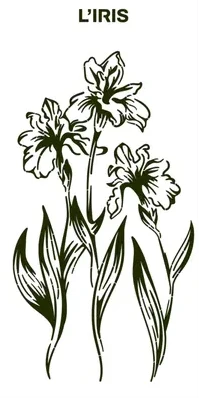

L’atelier
De la Bigorre à votre mur
Terre Gravée est la micro-entreprise de Romain Fourneaux. L’atelier a son adresse à Gerde, à côté de Bagnères-de-Bigorre. Les plaques reprennent les dessins de deux illustratrices. La découpe se fait à Revel, le thermolaquage à Bagnères-de-Bigorre.

L’origine
Tout a commencé à Aquensis
Avant les plaques, il y a eu un décor. À Aquensis, le centre thermal de Bagnères-de-Bigorre, il fallait masquer une coursive technique. Le projet conçu pour Aquensis compte 30 niches de 1 m × 2 m, fermées par des panneaux de métal découpé.
Le thème : le patrimoine, la flore et la faune de la Bigorre. Maude Villatte et Lola Jacquet ont dessiné 60 illustrations, adaptées ensuite à la découpe.
Les panneaux sont en aluminium thermolaqué effet Corten, découpés au laser et rétroéclairés. Les visiteurs ont adoré. L’idée est venue de là : proposer ces dessins aux particuliers, en plaques de 60 × 30 cm.
- Lieu
- Aquensis, centre thermal de Bagnères-de-Bigorre
- Projet
- Masquer une coursive technique : 30 niches de 1 m × 2 m
- Thème
- Patrimoine, flore et faune de la Bigorre
- Dessins
- 60 illustrations de Maude Villatte et Lola Jacquet
- Matière
- Aluminium thermolaqué effet Corten, découpe laser, rétroéclairage
La fabrication
Quatre étapes, de Revel à Bagnères-de-Bigorre
La découpe se fait à Revel (31). Le thermolaquage, l’assemblage, le contrôle et l’expédition, à Bagnères-de-Bigorre (65). La marque parle d’un rayon de 150 km point de référence à fournir : Revel est à environ 155 km de Gerde à vol d’oiseau.

Illustratrices
Dessin
Les dessins originaux sont signés Maude Villatte et Lola Jacquet.
Un dessin de la planche de l’atelier, avant la découpe.

Revel (31)
Découpe laser
Le laser découpe la feuille d’aluminium de 2 mm, jusqu’aux lettres pochoir du titre.
Aluminium brut, avant le laquage. Photo de la découpe à fournir

Bagnères-de-Bigorre (65)
Thermolaquage
Une peinture en poudre cuite au four : noir, gris ou doré.

Bagnères-de-Bigorre (65)
Contrôle et expédition
Assemblage, contrôle et envoi. Commandé avec la plaque, le kit LED est monté par l’atelier avant l’envoi.


Un numéro au dos de chaque plaque
Chaque modèle est édité en série limitée. Le numéro est gravé au dos. Taille de chaque série à fournir
Les illustratrices
Maude Villatte et Lola Jacquet
Les dessins des plaques sont signés de deux illustratrices. Pour Aquensis, elles ont dessiné 60 illustrations du patrimoine, de la flore et de la faune de la Bigorre.
Chaque dessin est ensuite adapté à la découpe laser, jusqu’au titre en lettrage pochoir.

Les avis
Les 9 avis publiés
Note : 5 sur 5
« Superbe plaque détail minutieux merci Romain »
Greg 65La Tour des Jacobinspublié le Note : 5 sur 5
« Mis dans notre maison de vacance à Campan top ! »
MarieL’Isardpublié le Note : 5 sur 5
« Vu pendant la cure à Bagneres. Merci à Romain de nous les avoir montrés avant l'achat. »
Sophia P.La Marmottepublié le Note : 5 sur 5
« Pris en noir rend super bien dans mon salon. »
IsaLe Pic du Midipublié le Note : 5 sur 5
« Classe et facile à installer grâce au scratch »
Romain P.Le Pic du Midipublié le Note : 4 sur 5
« Cadeau pour un ami pris en gris top. 1 étoile en moins j'ai attendu une semaine pour la livraison ! »
GeraldLe Cerfpublié le Réponse de l’atelier proposition à valider
À rédiger par Romain, au sujet du délai de livraison.
Note : 5 sur 5
« Super plaque vu suite à la visite sur Aquensis »
Anto 65L’Ourspublié le Note : 5 sur 5
« Monté cet été j'ai souffert du coup je me suis fais un cadeau. Pris en gris ! »
Jerome D.Le Tourmaletpublié le Note : 5 sur 5
« Habitant à Mauvezin top d'avoir un peu de mon patrimoine chez moi »
SergioLe Château de Mauvezinpublié le
Avis publiés sur le site sans vérification d’achat. Comment sont publiés les avis
Comment sont publiés les avis
Les avis sont publiés sur le site sans vérification d’achat : rien ne garantit que leur auteur a acheté la plaque. Ils sont affichés du plus récent au plus ancien, avec leur date, sans tri selon la note. L’accueil montre les trois plus récents. Les textes sont cités mot pour mot.
- Contrepartie offerte aux auteurs d’avis : aucune à confirmer
- Délai de publication et durée de conservation à fournir
- Motifs de refus d’un avis à fournir
Un doute sur un avis ? Signalez-le à contact@terregravee.fr.